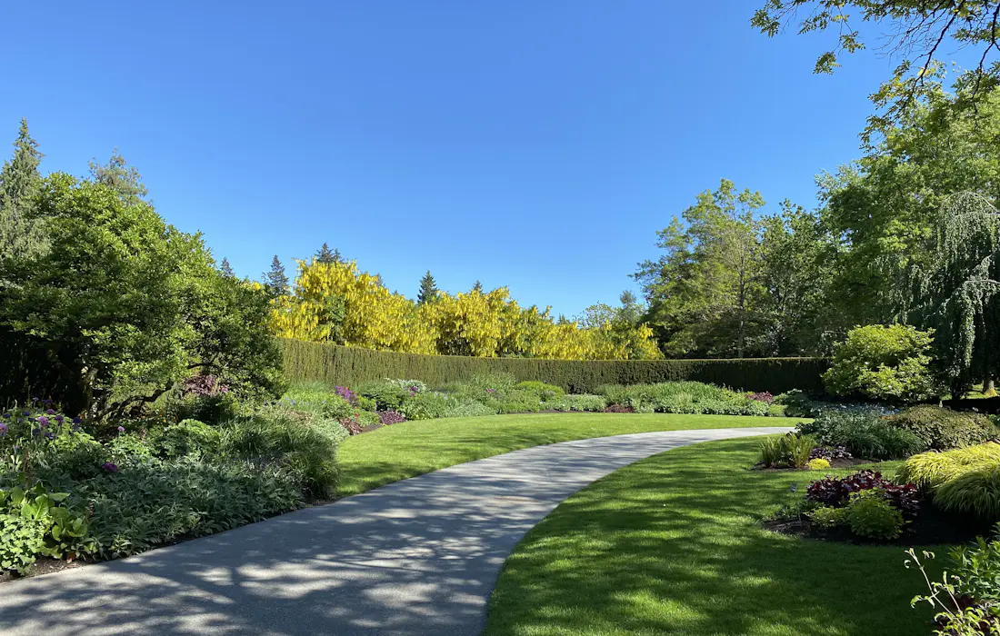
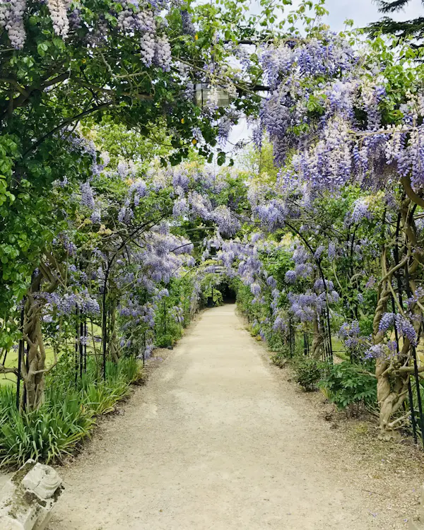
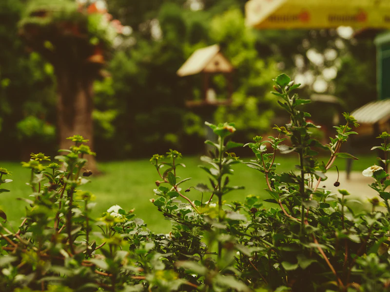
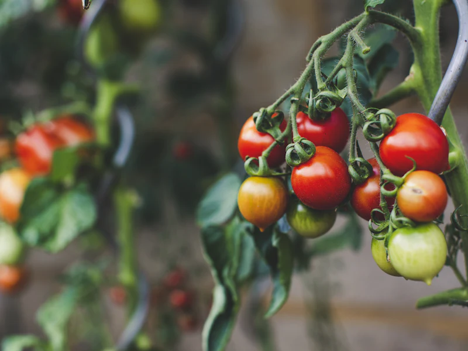
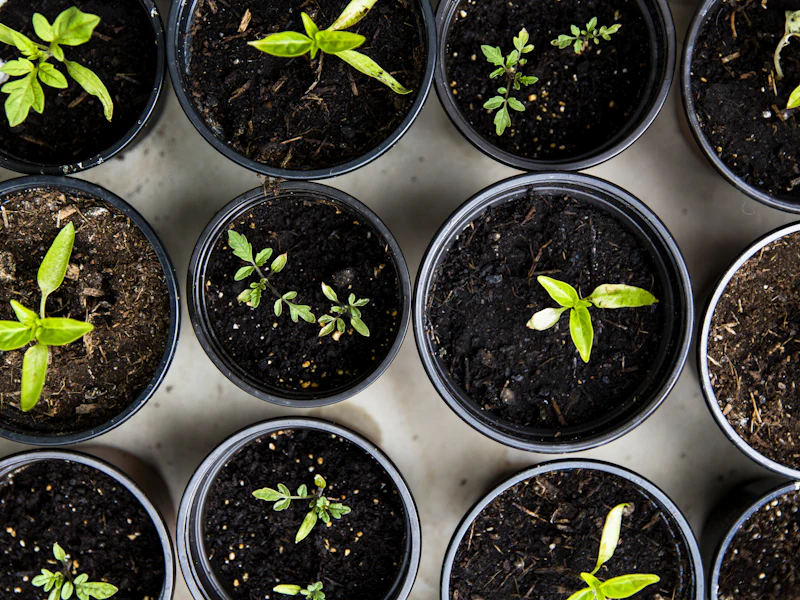

Paysagiste à Épinal
L'art des 1001 jardins
Taille de haies, élagage, plantations, entretien : mille et une attentions pour un jardin qui vous ressemble, à Épinal et alentours.
5,0 · 16 avis Google

Savoir-faire
Cinq métiers, un seul artisan
Taille de haies
Des lignes nettes et régulières, une taille respectueuse du végétal et des saisons — déchets verts évacués.
Élagage
Arbres allégés, sécurisés et mis en valeur, en respectant leur port naturel.
Plantation
Arbres, arbustes, massifs fleuris ou potager : les bons végétaux, au bon endroit, au bon moment.
Entretien de jardin
Tonte, désherbage, soins réguliers : un extérieur impeccable toute l'année, ponctuellement ou au fil des saisons.
Conseil & aménagement
Un regard d'artisan pour composer, transformer ou repenser votre jardin — et le faire durer.

La signature de la maison
Mille et une attentions
Un jardin réussi se raconte au fil des saisons : une arche de glycine qui embaume en mai, un massif qui s'épanouit, une allée qui invite à la promenade. Ici, on taille, on plante et on compose avec une exigence d'artisan — et ce souci du détail qui change tout.
- Devis gratuit, clair et sans surprise
- Travail soigné, chantier laissé propre
- Conseils de saison offerts à chaque visite
La preuve par l'image
Avant / après : le jardin transformé
Faites glisser la fleur — ou utilisez les flèches du clavier — pour comparer.



Le conseil en plus
Le calendrier du jardin
Que faire au jardin en ce moment ? Nous sommes en juin : voici les gestes qui comptent — et ceux des mois à venir.
JanvierCe mois-ci
- Taillez les fruitiers à pépins, hors gel
- Affûtez et entretenez les outils
- Planifiez massifs et plantations de l'année
- Protégez les pots des fortes gelées
FévrierCe mois-ci
- Taillez rosiers et arbustes à floraison estivale
- Élaguez avant la montée de sève
- Préparez le sol du potager
- Semez sous abri (tomates, aromatiques)
MarsCe mois-ci
- Première tonte, lame haute
- Scarifiez et regarnissez la pelouse
- Plantez arbustes et vivaces
- Rabattez les graminées sèches
AvrilCe mois-ci
- Semez ou réparez le gazon
- Désherbez et binez les massifs
- Plantez les aromatiques
- Surveillez limaces et pucerons
MaiCe mois-ci
- Attendez les Saints de glace pour les plus frileuses
- Plantez tomates et annuelles en fin de mois
- Tondez régulièrement
- Paillez les massifs avant l'été
JuinCe mois-ci
- Taillez les haies — après la nidification
- Tondez chaque semaine, lame un peu plus haute
- Plantez les dernières annuelles
- Arrosez au pied, le soir, sur sol paillé
- Tuteurez tomates et grimpantes
JuilletCe mois-ci
- Arrosez tôt le matin ou tard le soir
- Taillez la glycine après floraison
- Supprimez les fleurs fanées
- Récoltez au fil des jours
AoûtCe mois-ci
- Arrosage raisonné : misez sur le paillage
- Taillez les haies en fin de mois
- Semez les bisannuelles
- Récoltez, partagez, conservez
SeptembreCe mois-ci
- Plantez vivaces et conifères
- Regarnissez la pelouse
- Plantez les bulbes de printemps
- Dernière taille de haies avant l'hiver
OctobreCe mois-ci
- Ramassez les feuilles — futur compost
- Plantez arbres et arbustes
- Rentrez les plantes gélives
- Dernière tonte, lame haute
NovembreCe mois-ci
- « À la Sainte-Catherine, tout bois prend racine »
- Plantez haies et fruitiers
- Élaguez les arbres dépouillés
- Nourrissez le sol au compost
DécembreCe mois-ci
- Élaguez hors période de gel
- Protégez les jeunes plantations (voile, paillis)
- Taillez les fruitiers à pépins
- Dessinez le jardin de l'an prochain — parlons-en !
Parlons de votre jardin
Demander un devis gratuit
Décrivez votre projet et joignez quelques photos : vous serez rappelé rapidement avec une proposition claire.
Ils nous font confiance
5,0 sur Google
16 avis, la note maximale.
« Taille de haies impeccable, jardin métamorphosé. Travail soigné et de bon conseil. »
Avis Google — taille de haies
« Élagage rapide et propre, tout est nettoyé en partant. Je recommande. »
Avis Google — élagage
« De très bons conseils pour nos plantations. Sérieux et passionné. »
Avis Google — plantations & conseil
Zone d'intervention
Épinal et alentours
Basé rue des Epinettes à Épinal, nous intervenons dans toute l'agglomération et les communes voisines. Votre village n'est pas dans la liste ? Appelez-nous, on en parle.
- Épinal
- Golbey
- Chantraine
- Dinozé
- Deyvillers
- Jeuxey
- Dogneville
- Uxegney
- Les Forges
- Arches
- Thaon-les-Vosges
- … et alentours